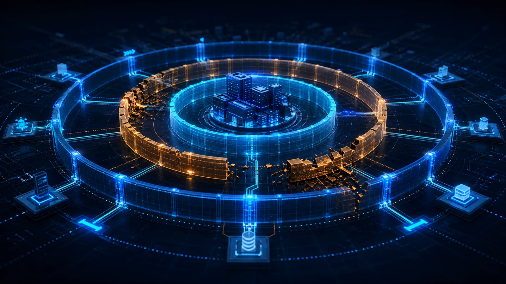

Good Security Architecture Assumes Every Control Will Eventually Fail
Every security control has a failure mode. Good security architecture ensures that when one fails, independent controls continue protecting the business.

One of the biggest lessons from cybersecurity is that every security control has a failure mode.
Firewalls are misconfigured.
Identity providers become unavailable.
Certificates expire.
Authentication systems are bypassed.
Hardware Security Modules develop firmware vulnerabilities.
Even hardware wallets designed to protect digital assets can fail. The recent Coldcard entropy vulnerability serves as a reminder that no individual security control should ever be considered infallible.
The important lesson is not about Bitcoin.
It is about architecture.
Because good security architecture never assumes that a single control will protect the business forever.
Security Controls Fail. Architecture Should Not.
A common mistake is to equate security with security products.
Deploy Multi-Factor Authentication.
Install Endpoint Detection and Response.
Use a Hardware Security Module.
Purchase a hardware wallet.
Each of these controls strengthens security.
None of them guarantees it.
Every control is designed to reduce risk.
No control eliminates risk.
The role of security architecture is therefore not to find the perfect control.
It is to ensure that when one control fails, the organisation continues to remain secure.
Layered Controls Matter More Than Perfect Controls
Consider the recent discussion surrounding hardware wallet security.
If an organisation relies on a single hardware wallet to protect high-value digital assets, a flaw in that device could have catastrophic consequences.
A well-designed institutional custody platform would never rely on one control alone.
Instead, it would implement:
- Multi-signature or Multi-Party Computation (MPC)
- Independent key custodians
- Hardware Security Modules
- Transaction approval workflows
- Separation of duties
- Continuous monitoring
- Recovery procedures
The hardware wallet becomes one control among many.
Not the final line of defence.
The same principle applies far beyond cryptocurrency.
Banking Has Applied This Principle For Years
Banks have long recognised that individual controls can fail.
That is why large-value fund transfers rarely depend on a single approval.
One person prepares the transaction.
Another reviews it.
Different individuals approve it.
Independent systems verify it.
Monitoring continues even after the transaction is completed.
The objective is simple.
A single mistake—or a single compromised control—should never result in a successful fraud.
This philosophy should guide cybersecurity architecture as well.
Security Architecture Designs For Failure
Security architecture is often misunderstood as designing secure environments.
In reality, it is about designing resilient environments.
Resilience begins with an uncomfortable assumption:
"This control may fail one day."
What happens if the firewall is bypassed?
What happens if an administrator account is compromised?
What happens if an API key is exposed?
What happens if an identity provider becomes unavailable?
What happens if an AI agent receives excessive permissions?
Good architecture asks these questions before an incident occurs.
Because architecture is not about preventing every failure.
It is about limiting the consequences of failure.
Independent Controls Reduce Systemic Risk
One of the strongest principles in security architecture is independence.
When every security control depends on the same technology, vendor or identity provider, a single weakness can affect the entire environment.
Independence creates resilience.
Different authentication factors.
Independent approval workflows.
Separate administrative accounts.
Multiple verification mechanisms.
Defence in depth is not simply about adding more controls.
It is about ensuring those controls fail independently.
That distinction is often overlooked.
Security Architecture Protects The Business
This is why security architecture should always be discussed at the business level rather than the technology level.
Business disruption rarely occurs because one control failed.
It occurs because the architecture allowed a single control failure to become a business failure.
Good architecture limits blast radius.
Protects critical assets.
Maintains business operations.
And gives organisations time to detect, respond and recover.
Technology protects systems.
Architecture protects outcomes.
Final Thoughts
The question is not whether a security control will fail.
History tells us that eventually, one will.
The better question is:
"When it does, what happens next?"
If the answer is immediate business disruption, the problem is not the control.
It is the architecture.
Whether protecting digital assets, payment systems, customer identities or cloud platforms, the principle remains the same.
Never build security on the assumption that one control will never fail.
Because good security architecture is not built on perfect controls.
It is built on independent controls that continue protecting the business when one of them eventually does.
For a deeper discussion on designing resilient architectures, you may also enjoy The Best Security Architects Know How Systems Break and Security Architecture Protects The Business; Security Controls Protect The Technology.
Question assumptions. Share knowledge. Build trust.
Share this article
If this perspective was useful, share it with your network.